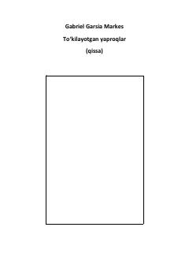

TYMakondo qishlog'idagi o'zgarishlar va insoniy taqdirlar haqidagi ta'sirli qissa.
Gabriel Garsia Markesning ushbu qissasi Makondo qishlog'idagi o'zgarishlar va insoniy taqdirlar haqida hikoya qiladi. Asar urushdan keyingi davrning ijtimoiy va ruhiy ta'sirlarini o'ziga xos uslubda tasvirlaydi.